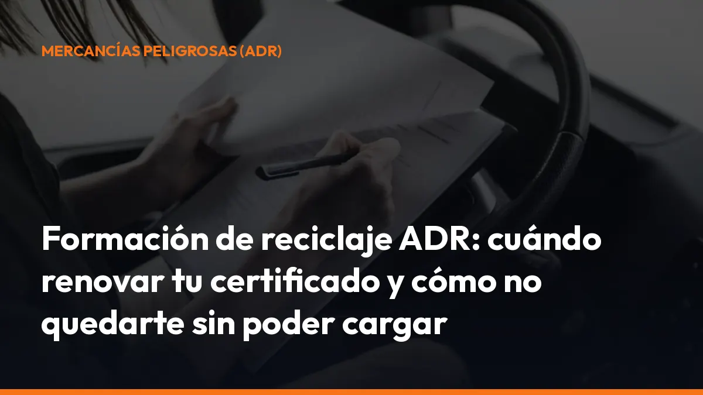

Formación de reciclaje ADR: cuándo renovar tu certificado y cómo no quedarte sin poder cargar

Cuando el certificado caduca, ya no puedes realizar transportes ADR hasta volver a obtener la autorización correspondiente. Además, trabajar sin la documentación exigida puede provocar sanciones, inmovilización del vehículo y pérdida de servicios.
La solución es sencilla: comprueba tu fecha de caducidad, matricúlate en un curso ADR de mercancías peligrosas y supera el examen oficial dentro de plazo.
¿Qué es el reciclaje ADR y para qué sirve?
El reciclaje ADR es la formación que debes realizar para prorrogar la autorización especial de conductor de mercancías peligrosas.
La autorización ADR tiene una vigencia de 5 años. Para renovarla, debes:
- Realizar un curso de reciclaje ADR en un centro autorizado.
- Superar la formación con aprovechamiento.
- Aprobar la prueba teórica correspondiente en Tráfico.
- Presentar la documentación de renovación dentro del plazo.
La autorización ADR acredita que conoces los riesgos, la documentación, la señalización, los equipos de seguridad y los procedimientos de actuación durante el transporte de mercancías peligrosas.
En la práctica, esto significa que puedes acceder a cargas ADR, cumplir los requisitos del cargador y evitar que tu camión quede parado por falta de habilitación. Consulta los requisitos de renovación en la información oficial de la DGT sobre autorizaciones ADR.
¿Cuándo tienes que renovar el certificado ADR?
La autorización ADR es válida durante cinco años. Debes planificar la renovación antes de que llegue la fecha de caducidad.
La DGT indica que la documentación de renovación debe presentarse, como máximo:
- El mismo día en que caduca la autorización.
- El siguiente día hábil, si la fecha de caducidad cae en un día inhábil.
Si dejas pasar ese plazo, ya no podrás hacer una renovación ordinaria. Tendrás que volver a obtener la autorización desde el principio, con la formación y los trámites correspondientes.
Renovación segura
No esperes al último mes. Empieza el proceso durante el año en que caduca tu ADR. Así tendrás tiempo para:
- Encontrar un centro autorizado.
- Completar el curso de reciclaje.
- Preparar el examen.
- Resolver cualquier incidencia documental.
- Presentar la solicitud a tiempo.
No cargues con un ADR caducado. Una fecha que pasa inadvertida puede dejarte sin trabajar y obligarte a repetir todo el proceso.
Formación inicial ADR y formación de reciclaje: diferencias
No todos los conductores se encuentran en la misma situación. La formación depende de si vas a obtener la autorización por primera vez o si necesitas renovarla.
Formación inicial ADR
La formación inicial es la que realizas para obtener por primera vez la autorización ADR. Incluye:
- Curso básico de mercancías peligrosas.
- Formación teórica y práctica.
- Examen oficial en Tráfico.
- Expedición de la autorización correspondiente.
Es el camino que debes seguir si nunca has tenido el ADR o si lo dejaste caducar y ya no puedes renovarlo.
Curso de reciclaje ADR
El curso de reciclaje sirve para prorrogar una autorización ADR que todavía está en vigor.
Puedes realizar:
- Reciclaje básico, para mantener la autorización básica.
- Reciclaje de especialización, para mantener ampliaciones concretas.
- Curso integral o polivalente, cuando reúne la formación básica y una o más especialidades.
La formación debe realizarse en un centro autorizado y después tendrás que superar el examen exigido por la DGT.
¿Qué especializaciones ADR puedes renovar?
La autorización básica no cubre todos los tipos de transporte. Si vas a transportar determinadas mercancías o utilizar determinados vehículos, necesitas una ampliación específica.
ADR cisternas
Necesitas esta especialización para transportar mercancías peligrosas en:
- Vehículos cisterna.
- Contenedores cisterna.
- Vehículos batería.
El curso trata aspectos como el comportamiento de la carga líquida, el grado de llenado, las válvulas, la estabilidad del vehículo, la carga y descarga y las actuaciones en caso de fuga.
ADR explosivos
Esta ampliación habilita para transportar materias y objetos de la clase 1. La formación incluye los riesgos específicos de los explosivos, las disposiciones sobre carga en común, las medidas de seguridad y las obligaciones aplicables durante el transporte.
ADR radiactivos
Esta especialización corresponde a las materias de la clase 7.
El curso aborda la protección radiológica, la contaminación, la irradiación, el uso de equipos de detección, las distancias de seguridad y la respuesta ante accidentes o incidentes.
Cada ampliación requiere su formación y examen correspondiente. Si quieres conservar varias especialidades, revisa que el curso de reciclaje incluya todas las que aparecen en tu autorización.
Consulta las ampliaciones en la página oficial de la DGT sobre ADR cisternas, explosivos y radiactivos.
¿Qué ocurre si tu ADR caduca?
Cuando tu autorización ADR caduca, deja de habilitarte para transportar mercancías peligrosas.
Las consecuencias más importantes son:
- No puedes realizar legalmente transportes ADR.
- Puedes perder una carga ya asignada.
- El cargador puede rechazar tu vehículo.
- La empresa puede tener que reorganizar la ruta.
- Puedes enfrentarte a sanciones según la infracción cometida.
- El vehículo puede quedar inmovilizado hasta solucionar la situación.
La sanción concreta depende de factores como la mercancía, la documentación, el tipo de vehículo, la conducta detectada y la responsabilidad de cada interviniente.
No existe una única multa automática para todos los casos. El transporte ADR implica obligaciones para el conductor, el transportista, el expedidor y el cargador. Por eso debes revisar toda la documentación antes de salir, no solo la fecha del carnet.
La normativa española remite el régimen sancionador del transporte de mercancías peligrosas a la legislación de ordenación del transporte y de tráfico. Puedes consultar el marco normativo en el BOE y la normativa aplicable al transporte de mercancías peligrosas.
El centro ADR también tiene plazos que cumplir
El plazo de 10 días de antelación afecta al centro de formación, no a una espera adicional que deba asumir el conductor.
Los centros ADR autorizados deben solicitar a la Jefatura Provincial de Tráfico la aprobación de cada curso con, al menos, diez días de antelación a la fecha de inicio. Esto es importante si necesitas renovar con urgencia. Antes de matricularte, confirma:
- Que el centro está autorizado.
- Que el curso está aprobado por Tráfico.
- Que la convocatoria comienza con tiempo suficiente.
- Que incluye la modalidad básica o la especialización que necesitas.
- Que el calendario permite realizar el examen antes de tu caducidad.
La DGT explica el procedimiento para solicitar la apertura de un nuevo curso ADR para conductores.
Documentación y examen para renovar el ADR
Antes de presentarte al examen, debes haber realizado el curso correspondiente y obtener el certificado de aprovechamiento del centro.
Según tu situación, también puede ser necesario aportar:
- Autorización ADR en vigor.
- Permiso de conducir correspondiente.
- Informe de aptitud psicofísica para mercancías peligrosas.
- Documentación de renovación.
- Justificante de las tasas.
- Certificado del curso realizado.
Si eres titular de un permiso del grupo 2, como C1, C, D1 o D, en vigor, la DGT indica que normalmente no necesitas presentar un informe psicofísico adicional para mercancías peligrosas. Comprueba siempre tu caso antes de tramitar la prueba.
Cada solicitud de examen permite realizar dos convocatorias. Organiza las fechas con margen. No esperes a la última semana para descubrir que necesitas repetir una prueba o aportar un documento.
Checklist rápida antes de renovar tu formación ADR
Guarda esta lista en tu móvil:
- Fecha de caducidad: comprueba cuándo termina tu autorización.
- Modalidad: confirma si necesitas reciclaje básico, cisternas, explosivos o radiactivos.
- Centro autorizado: elige un centro habilitado por la DGT.
- Calendario: reserva el curso con suficiente antelación.
- Examen: solicita y prepara la prueba teórica.
- Documentación: reúne permiso, autorización y certificados.
- Presentación: entrega la renovación antes de la caducidad.
- Carga: no aceptes mercancías peligrosas si tu ADR no está vigente.
Digitaliza también tus documentos de transporte para tenerlos disponibles en la cabina, durante una inspección o en el punto de carga. Con Mi Carga puedes generar y gestionar documentación digital desde el móvil, incluso con modo sin conexión, trazabilidad ROTT y portes ilimitados según el plan contratado.
¿Cómo evitar quedarte sin poder cargar?
Empieza por una acción concreta: localiza hoy la fecha de caducidad de tu ADR.
Después:
1. Elige el tipo de reciclaje que necesitas. 2. Contacta con un centro autorizado. 3. Reserva el curso antes de entrar en el último tramo. 4. Prepara el examen de Tráfico. 5. Guarda el certificado y la autorización junto al resto de tu documentación. 6. Lleva tus cartas de porte e instrucciones de transporte correctamente organizadas.
Nosotros te ayudamos a reducir el papeleo diario con documentación digital para el transporte de mercancías. Así puedes emitir, consultar y compartir tus documentos directamente desde el móvil, sin depender de carpetas ni perder tiempo en la carretera.
Activa tu suscripción a Mi Carga desde 10 € al mes + IVA o solicita un presupuesto para tu empresa.
Preguntas frecuentes sobre el reciclaje ADR
¿Cuánto dura la autorización ADR?
La autorización ADR tiene una validez de 5 años. Para continuar utilizándola debes realizar el reciclaje y superar el examen exigido.
¿Puedo renovar el ADR si ya ha caducado?
No mediante la renovación ordinaria. Si ha pasado la fecha límite, tendrás que volver a obtener la autorización desde el principio, según el procedimiento aplicable.
¿El reciclaje básico sirve para transportar en cisternas?
No. Para transportar mercancías peligrosas en cisternas necesitas la ampliación ADR de cisternas y su formación específica.
¿Puedo renovar varias especializaciones a la vez?
Sí. Puedes realizar varios cursos o un curso integral, siempre que el centro y la convocatoria estén autorizados para esas modalidades.
¿El curso ADR sustituye al examen?
No. El curso es obligatorio, pero también debes superar la prueba teórica correspondiente en Tráfico para obtener o prorrogar la autorización.
¿Qué debo hacer si mi autorización caduca este año?
Busca un centro autorizado, confirma el tipo de reciclaje que necesitas y comienza el proceso cuanto antes. No esperes a la fecha límite: si no presentas la documentación a tiempo, puedes quedarte sin autorización para transportar mercancías peligrosas.
Elige tu curso, revisa tus documentos y renueva tu ADR antes de que caduque. Así mantendrás tu actividad, evitarás cargas rechazadas y podrás seguir trabajando sin complicaciones.
Genera tus 10 primeros documentos gratis con Mi Carga
DeCA, carta de porte y ADR, en PDF, con QR y archivo automático en la nube.
Empezar con 10 documentos gratisArtículo informativo. Consulta siempre el caso concreto de tu operación. ¿Dudas? Escríbenos.